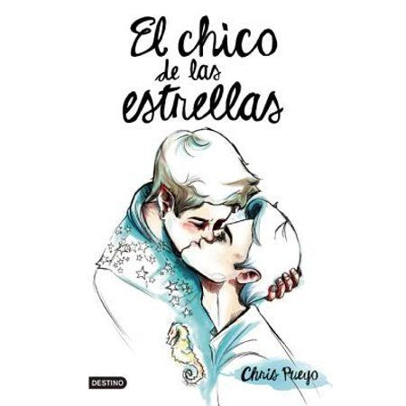

El chico de las estrellas-Chris Pueyo
Cuando lo comencé a leer, tenía una idea completamente diferente. Superó todas mis expectativas. Todas las emociones están tan bien llevadas al papel que también las sentí. Me identifiqué varias veces con el protagonista. Agridulce es sin duda la mejor palabra para describir esta obra de arte.